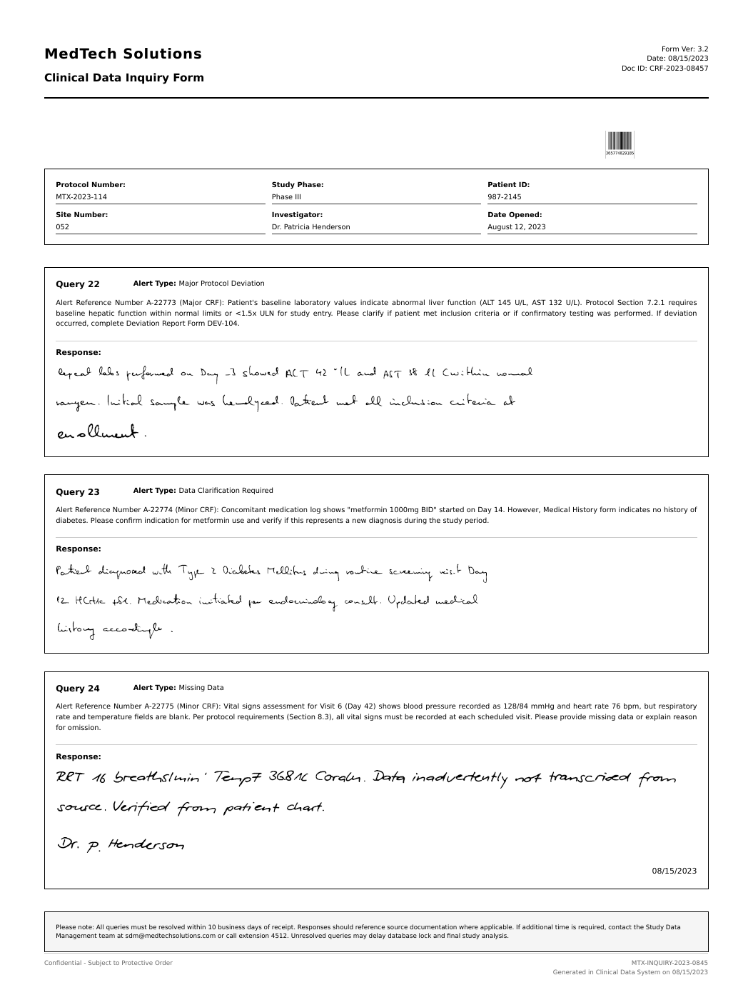
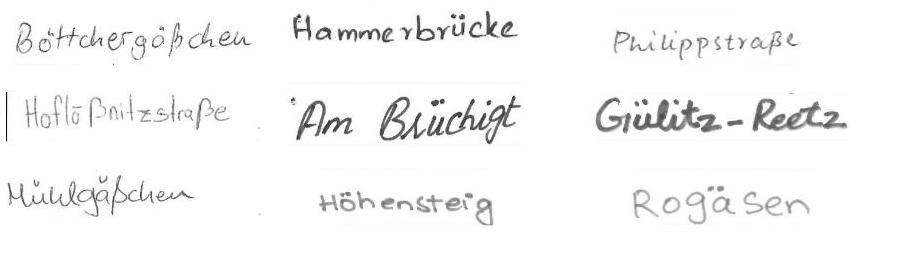
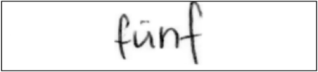
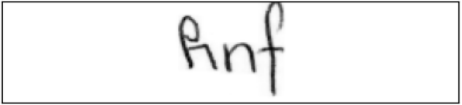
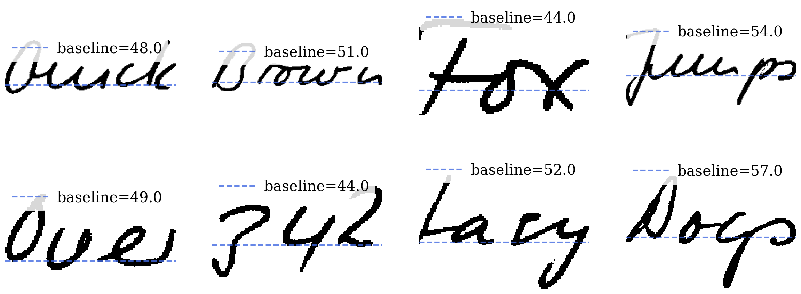
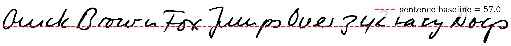
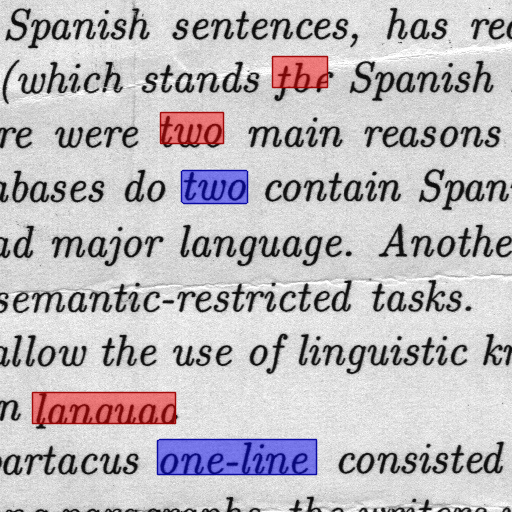
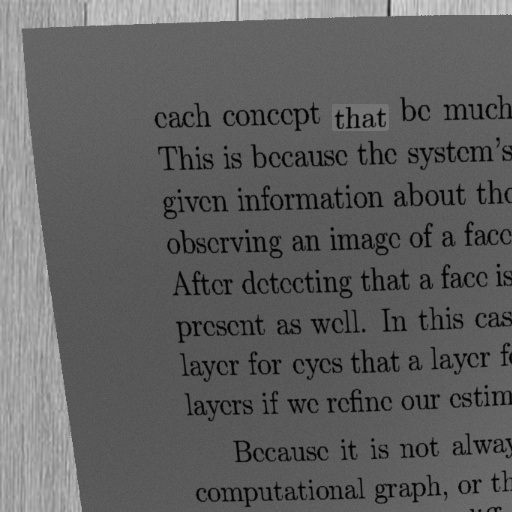
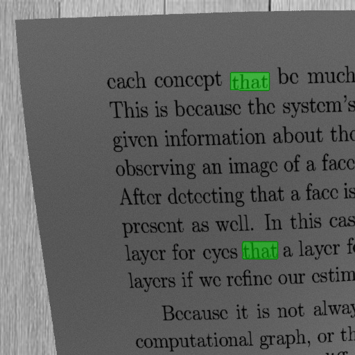
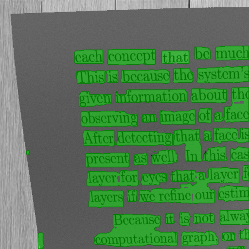

Second PhD colloquium
From Handwriting
to Hidden
Forgeries
How reliable is Document AI?
Nauman RiazRPTU Kaiserslautern-Landau · DFKI
A synthetic document Handwriting · fields · tables
01 / 32
DocDjinn synthetic form / Content and context
Begin with
one word.
What does this word tell us about its source?
02 / 32
The learning challenge / Synthetic document examples
Varied pages.
Useful supervision.
Short handwritten fields
Content within structure

Longer handwritten passages
01Construct and recover structure
Generate examples → learn a representation
03 / 32
A second question / Beyond correct reading
Readable.
But reliable?
Example amount field
01 · The documentCould it have
been altered?
02 · The detectorWhat makes its
evidence reliable?
01 Construct and recover
structure
02 Use and test
forensic evidence
StylusAI: Stylistic Adaptation for Robust German Handwritten Text Generation
Our starting point:
handwriting.
German city and street names

DHSD handwriting samples
The model contribution
StylusAI
A requested word.
A chosen writer style.
↓
Generated handwriting
Three conditions.
One handwriting generator.
06 / 32
Handwriting style
across languages
Target textfünf
+
Writer styleEnglish writerlearned style embedding
+
Printed character guidefünf
→German text
in the selected style
StylusAI
WordStylist comparison
German words in IAM writer styles · Joint IAM + DHSD training
Downstream handwriting recognitionReal DHSD → real + StylusAI data
11.13%→10.24%
Character error rate ↓
Quality still varies by style
07 / 32
Current contributions / Research map
Since the
first colloquium.
Two complementary streams · Direct technical links within each pair
08 / 32
DocDjinn: Controllable Synthetic Document Generation with VLMs and Handwriting Diffusion
Generate the page.
Generate its supervision.
01Select seeds
UMAP → HDBSCAN
Within-cluster seed sampling
Unlabeled pages · schematic groups
02Generate markup
Claude Sonnet 4.5
HTML + task annotations
<td>Department</td>
<td class="handwritten">
Environmental Testing Lab
</td>
Structure, content and placeholders
Illustrative HTML
03Enhance & render
Handwriting + visual elements
Synthetic page example
04Locate & verify
Illustrative question
Which department
requested equipment?
Environmental
Testing Lab
PDF / OCR+Label checks
Check text, regions and labels
Keep valid, single-page outputs
Financial supportAlso BMFTR / SLIMDOC
09 / 32
Handwriting that belongs
inside the document.
Handwriting region
Illustrative placement
Condition the regionText + writer style
01 · Generate words · IAM-trained latent diffusion
02 · Median ink baseline → aligned line
↳03 · Fit the entry into its region
Retain its text and spatial annotations
10 / 32
Synthetic data helps
when labels are scarce
DocVQA · LayoutLMv3 · Answer similarity / ANLS ↑
+22.21
points with synthetic data
Starting from
100 labeled real samples
Much of the gap closes.
The full-real reference
remains higher.
Held-out real test documents · Mean of three runs.
11 / 32
Useful supervision.
Across document tasks.
100 labeled real training examples per benchmark · Unlabeled real seeds for generation
Classification
RVL-CDIP
LayoutLMv3 · Accuracy ↑
+45.25points with augmentation
Information extraction
FUNSD
LayoutLMv3 · F1 ↑
-1.77points with augmentation
Layout analysis
DocLayNet
Faster R-CNN · AP ↑
+9.95points with augmentation
Generated supervision supports learning.The image–HTML pairs also enable DocScribe.
12 / 32
DocScribe
Method · ReconstructionDocScribe: Handwriting-Aware Document Templating with Compact OCR-Free Models
Learn the reverse direction.
From image to structure.
TrainingDocDjinn image–HTML pairs→Pix2Struct Base · 282M
Document image→Structured HTML→Rendered documentNormalized HTML · HTML/CSS tokens
Reference HTML rendering
DocScribe prediction rendered as HTML
Whole renderings · matched example · same display scaleStructure and text need separate evaluation.
13 / 32
Learning document structure
from synthetic supervision.
HTML structure · TreeBLEU ↑
Parent–child tag patterns
Close to Qwen in this setting.
Text · F1 ↑
Word overlap · order ignored
Text recovery remains weaker.
What the pairs enable
An explicit
representation.
Generated supervision teaches a compact model to recover document structure.
Handwriting markup
0.77 precision · 0.31 recall
Text-similarity matching
Recovered structure.
What about integrity?
Scores use parseable outputs; evaluated samples differ by model.
DocScribe 282M · Qwen2.5-VL 7B · Claude Sonnet 4.5 frontier reference
14 / 32
From structure to evidence / The second research stream
Knowing what is there
is only one question.
The opening document · unchanged
What is on the page?
Has part of it
been altered?
Accurate reconstruction does not establish integrity.What evidence supports that judgment?
DocForgeNet→JPEG-grid study
Localize manipulation Use and test detector cuesUse and test forensic evidence / Examples of local edits
One altered field.
A different document claim.
01Copy-moveContent from the same image
02SplicingContent from another image
03Text replacementNewly generated or rendered text
Synthetic data is deliberate generation.
Here, we investigate local alteration.
16 / 32
A small region.
A difficult localization problem.
Already manipulated inputSupplied receipt cropEnlarged detail · same input
Ground-truth annotationGround-truth outline
THE TASKWhere was
the image altered?
Localize the region within the document.
OUR SETTINGJPEG-compressed
document images
A widely used image format
for storage and sharing.
TWO SOURCES OF EVIDENCEVisible appearance +
Compression patterns
17 / 32
DocForgeNet: Dual Cross-Stream Fusion Network for Robust Forgery Detection in Scanned Documents
Two views of the image.
An exchange of evidence.
SUPERVISION Annotated pixel masksOBJECTIVE Cross-entropy + LovászDESIGN Three stages of feature exchange
18 / 32
Better localization.
But the test split matters.
Pixel-level F1 (%) ↑Original studyDocTamper · 1–3 JPEG compressions · quality ≥ 75
TestingSet30,000 images+2.8percentage points vs DTD
FCD2,000 images+7.5percentage points vs DTD
SCD18,000 images-4.2percentage points vs DTD
Gains on TestingSet and FCD; lower F1 on SCD.
What evidence drives the decision?
Mistaking Periodicity for Manipulation: JPEG-Induced Structural Bias in Document Tampering Detection
Strong scores.
What evidence drives them?
Already manipulated inputText and layout
The same image detail8 × 8-pixel block spacing
Illustrative JPEG grid
VISIBLE CONTENTWhat the page says.
ENCODING STRUCTUREHow the image
was compressed.
RELIABILITY QUESTIONWhat changes
the prediction?
Several detectors, including DocForgeNet
20 / 32
Change the content.
Align the edit with the grid.
GRID-ALIGNED FORGERY
- 01
Expose the gridEach cell represents 8 × 8 pixels.
- 02
Align the boundariesExpand to enclosing block edges.
- 03
Apply the same editMatched source, target and JPEG schedule.
Same principle acrossCopy-moveSplicingRendered text
21 / 32
The edit is present.
The response can be missing.
Annotated manipulation regions
GAF Standard forgery
Detector predictionPredicted tampering
READ THE SAME LOCATIONS
The words remain
in the document.
Compare the red regions
with the green response.
Grid-aligned edits
can be missed.
22 / 32
Aligned edits.
Weaker localization.
DocTamper TestingSet · 30,000 images · Copy-move · Pixel F1 (%) ↑
Paired unaligned controlGAF-CM
DOCFORGENET · SAME TEST SPLIT
| Manipulation | Control | GAF |
|---|
| Copy-move | 80.3 | 33.3 |
|---|
| Splicing | 87.3 | 45.9 |
|---|
| Rendered text | 69.8 | 35.5 |
|---|
Copy-move · Detection Failure Rate7.4% → 53.2%
Mean failure rate over six IoU thresholds
0, 0.1, …, 0.5 · Lower is better. Paired edits · Same content, operation and JPEG settings
23 / 32
Keep the content.
Change the compression grid.
JPEG encodes an image in
8 × 8 pixel blocks.
- 01
PadRepeat edge pixels · 4 px left/top
- 02
RecompressThe same JPEG settings as the baseline
- 03
Crop backRestore the original size; do not recompress again
The document already contains a forgery.
PRC introduces no new textual edit.
Original block alignmentOperation schematic · magnified document detail
24 / 32
A small grid shift.
A large change in prediction.
01 Input document
Existing document forgery
02 Baseline prediction
Original compression alignment
03 After PRC
Extensive additional detections
Green: predicted tamperingSame text and layout; recompression can alter pixel values
25 / 32
The response depends
on the detector
Re-evaluated baseline After PRCPixel-level F1 (%) ↑
DocForgeNet
77.4→9.5
F1 (%) after the grid shift
21.5%of the total image area
falsely marked, on average
ADCD-Net improves in this condition.
The effect is not universal.
26 / 32
Two probes.
Two failure patterns.
01 · GAFAlign a new edit
Missed manipulation
Compared with a paired
unaligned edit.
02 · PRCShift compression alignment
Additional detections
No new textual edit;
the input already contains a forgery.
Grid sensitivity, within the tested scope.JPEG RGB+DCT models · Model-dependent responses
GAF: small boundary changes and known grid origin · PRC: RGB changes, fixed (4,4) shift
27 / 32
Research record / Published and accepted work
Research publications
StylusAI: Stylistic Adaptation for Robust German Handwritten Text Generation
ICDAR 2024Published
DocDjinn: Controllable Synthetic Document Generation with VLMs and Handwriting Diffusion
IJDAR 2026Published
DocScribe: Handwriting-Aware Document Templating with Compact OCR-Free Models
DAS 2026Published
DocForgeNet: Dual Cross-Stream Fusion Network for Robust Forgery Detection in Scanned Documents
ICDAR 2025Published
Mistaking Periodicity for Manipulation: JPEG-Induced Structural Bias in Document Tampering Detection
BMVC 2026Accepted
Learning Adaptive Prompting Policies for Cross-Dataset Cell Instance Segmentation
WACV 2027Accepted
28 / 32
Extending the research map / Synthesis & structure
Future work
Can we generate useful documents more efficiently?
Preliminary KIE pilot · Higher-ranked data outperforms lower-ranked data on FUNSD, SROIE and CORD.
Next test Does GRPO improve on generate-and-select?
29 / 32
Extending the research map / Forensic evidence
Future work
Can we find unfamiliar forgeries by learning from genuine documents?
Genuine documents are available.
Examples of fraud are scarce.
Early experiments
UniAD feature reconstruction
Clean-only setup still to establish
Genuine documentsTraining data
Learn normal patternsAnomaly detection
Locate suspicious changesIllustrative output
Next test Unfamiliar edits — without false alarms on genuine pages
Conclusion / Bringing the work together
Return to
the same question.
The opening document · unchanged
SYNTHESIS & STRUCTUREGenerate useful data.
Recover its structure.
FORENSIC EVIDENCEFind alterations.
Test the evidence.
Reading a value does not establish its integrity.
Useful data·Faithful structure·Tested evidence
31 / 32
Two streams. One research journey.
Understanding a document
is only part of the challenge.
Knowing what we can trust
is the next.
Thank you. Questions & discussion
From Handwriting to Hidden Forgeries
Thank you.
Questions & discussion
Nauman RiazRPTU Kaiserslautern-Landau · DFKI
Useful data.
Faithful structure.
Tested evidence.
Reliability must be tested beyond familiar conditions.
32 / 32